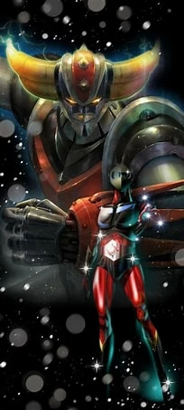
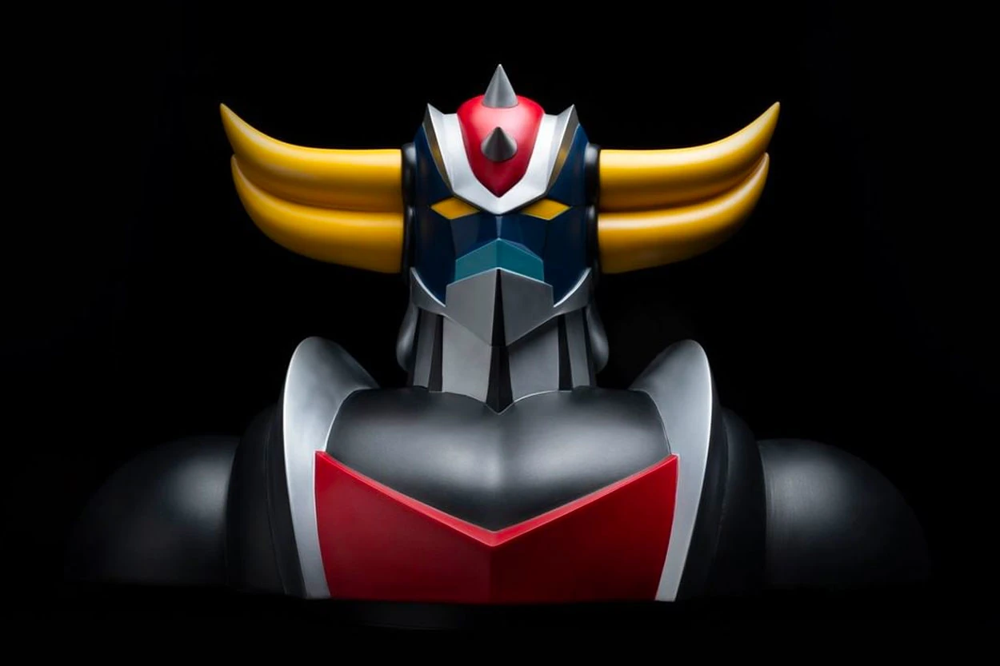

Bienvenue sur le site de l'association : Club Goldorak
Rôle de l'association : Club Goldorak
Le Club Goldorak est une association destinée aux passionnés de Goldorak, dans laquelle ses adhérents ont accés à beaucoup de privilèges et d'avanges sur différentes thématiques traitées par notre équipe.
Le Gérant avec son équipe de 12 bénévoles, passionnés et pointus sur le sujets, sont tous permanent dans l'association. C'est ainsi qu'ils scrutent la moindre nouveauté sur Goldorak, ainsi que tous ce qui peut y être lié (média, rassemblements, événements, concerts, produits dérivés, cinéma, séries, bons plans, etc...).
L'association organise tous pour que vous n'ayez plus qu'à profité de ce qui vous ait proposé et de dévorer à pleine dents votre passion en compagnie de personnes qui vous ressembles.
Chaque année, des adhérents sont tirés au sort pour nous accompagner dans nos nombreux déplacements au Japon, afin de chiner dans les quatiers où nous trouvons des dizaines de boutiques spécialisées en mangas, et pour certaines, exclusivement sur Goldorak.

Ils témoignent

Adhérer au Club Goldorak
Pour rejoindre nos +/-2800 adhérents (au 01/07/2023) au club Goldorak, c'est très simple! Il suffit de vous munir de votre CB, de cliquer sur lien ci-dessous, de remplir le formulaire et de procéder au paiement de la cotisation annuelle pour un montant de 35.00€TTC.
Nous vous enverrons votre cadeau de bienvenue à l'encaissement de votre cotisation : Une carte 3D exclusive de Goldorak!!!